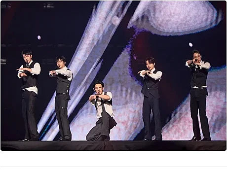
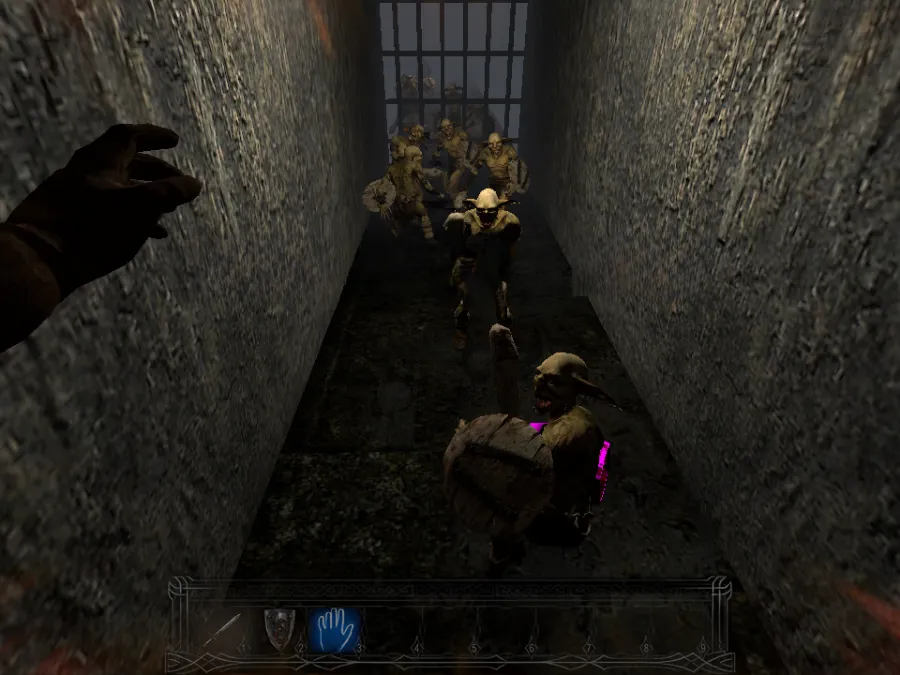

flow.
Newsletter K-pop business et data, et le système qui la produit chaque semaine.
Huit ans à faire le lien entre des œuvres et des publics. Aujourd'hui, ce sont les données que je mets en récit.

Newsletter K-pop business et data, et le système qui la produit chaque semaine.
Un site dont vous êtes le héros, joué à plusieurs et en asynchrone.

Modding d'un donjon original pour Dark Messiah of Might and Magic, pensé pour tester le moteur et offrir une autre vision du jeu.